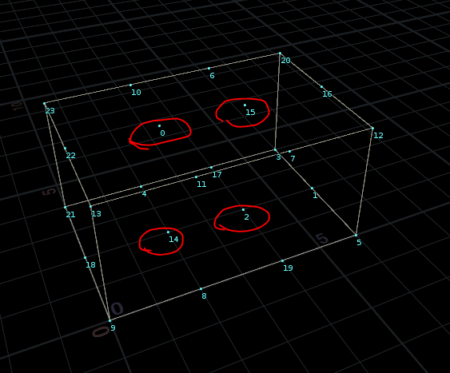
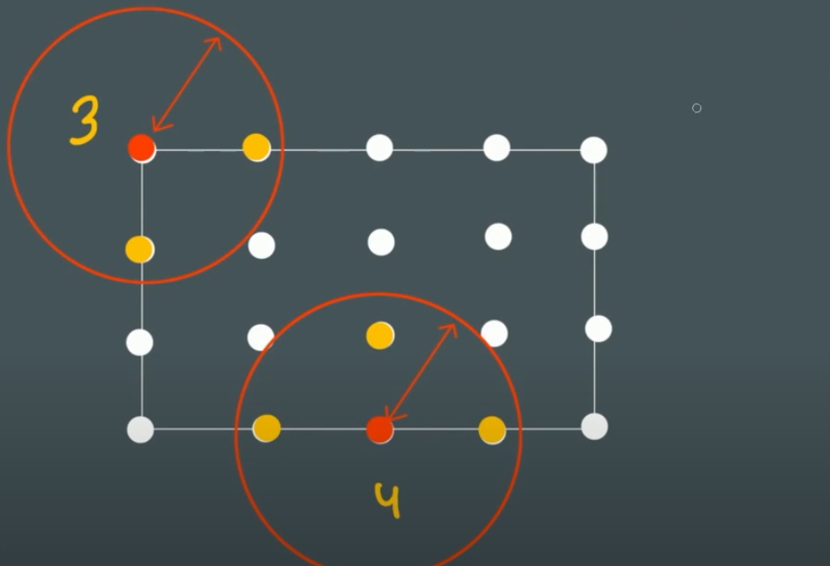
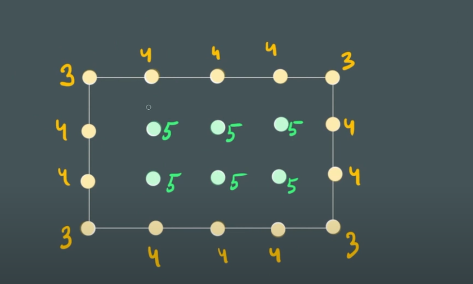

获取内部点
实现结果
- 获取红圈内点

算法
前提:
上个步骤中，点在x,z轴间距时2，在y轴间距是3

如果查找范围是2.1，可以按下面几种情况考虑，如果在houdini使用点云查找，因为会找到自身点，所以返回的点会多1
- 点在立方体顶点，会有3个相邻点
- 点在立方体边上，会有4个相邻点
- 点在立方体面上或者内部，会有5个相邻点
根据相邻点数量，就能提取到我们想要的任意点

// VEX code
// ----------------
// pcopen(int opinput, string Pchannel, vector P, float radius, int maxpoints)
// pcnumfound(int handle) 返回 pcopen 查询找到的点数。
int handle = pcopen(0, 'P', @P, 2.1, 10);
if (pcnumfound(handle)<5) {
removepoint(0, @ptnum);
}
// VEX code
// ----------------
// nearpoints(<geometry>geometry, vector pos, float maxdist) 所有最近的点列表
int nearpts[] = nearpoints(0,@P,2.1);
if (len(nearpts) < 5){
removepoint(0, @ptnum);
}